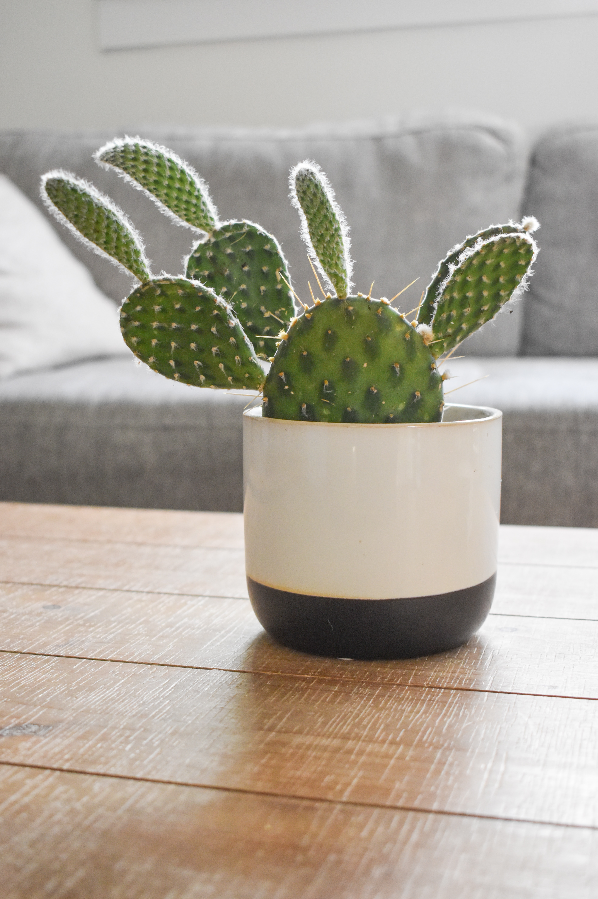
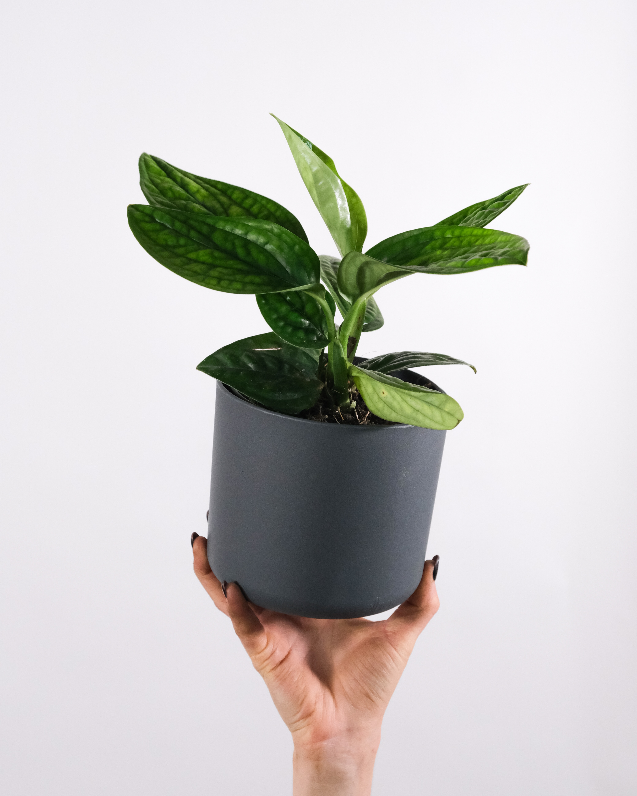
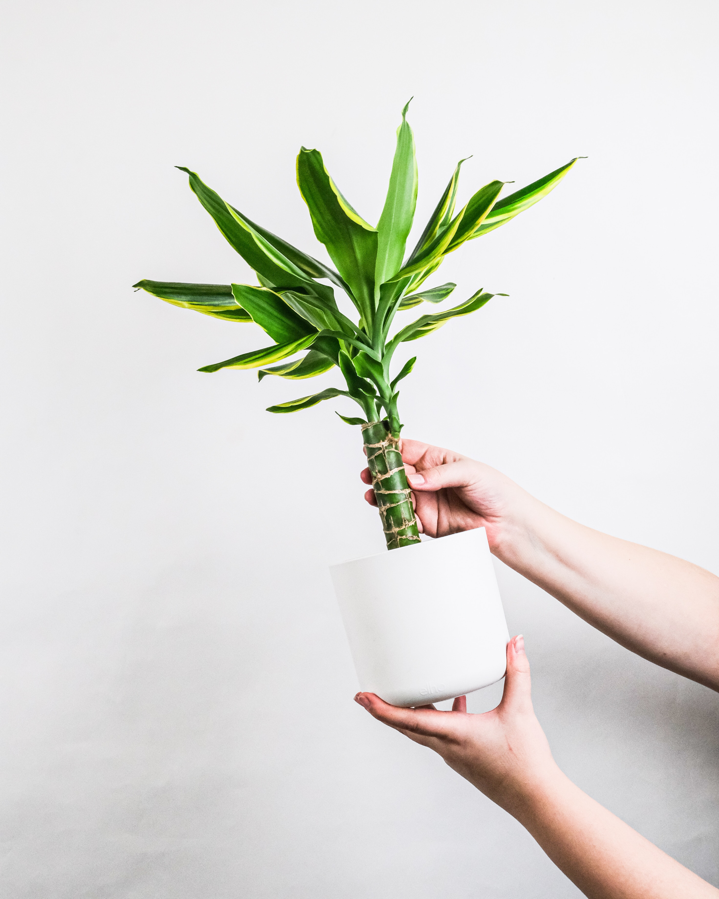

산세비에리아
아프리카의 열대 우림이나 건조 지역에 자생하는 식물로, 고온다습하고 채광이 강한 곳에서 잘 자란다는 특징이 있다.
건조한 환경에서도 잘 자라기 때문에 몇 개월 동안 물을 주지 않아도 생존이 가능하고, 여름이나 겨울에는 물을 적게 주는 것이 좋다.
보수성과 통기성이 우수한 토양이 적절하다.
(참고) Naver지식백과-산세비에리아

백도선
선인장의 특성 상 빛을 좋아하기 때문에 충분한 채광이 필요하다.
흙이 말라 보인다고 물을 주기 보다는 백도선의 잎에 수분 부족으로 인한 주름이 생겼을 때 물을 주는 것이 바람직하다.
배수가 잘 되는 토양이 적절하고, 잎을 떼어 다른 흙에 심어주면 번식이 가능하다.
(참고) Naver지식백과-백도선

스킨답서스
온열대 지역에서 자생하는 식물로, 실내 공기 정화에 효과적이다.
음지~반음지에서 키우는 것이 적절하며 토양의 표면이 말랐을 때 물을 주면 된다.
토양의 종류가 중요하지 않고, 해충에 대한 저항력이 있어 식물을 처음 키우는 사람들에게 추천되는 식물이다.
(참고) Naver지식백과-스킨답서스

행운목
아프리카에서 주로 자생하는 식물이다.
많은 빛을 필요로 하여 창가에서 키우는 것이 바람직하다.
겨울에는 토양의 표면이 말랐을 때 물을 주고, 그 외의 계절에는 항상 흙을 촉촉하게 유지해야 한다.
(참고) Naver지식백과-행운목